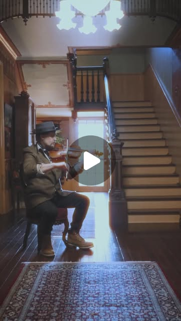
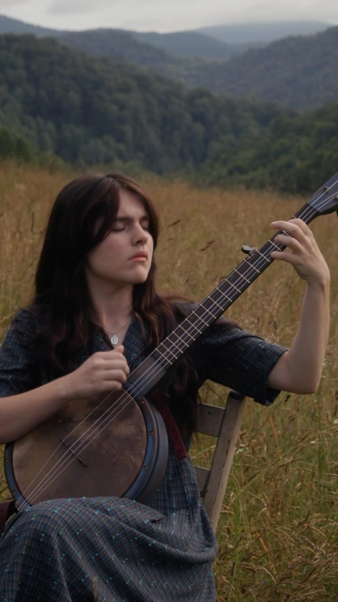
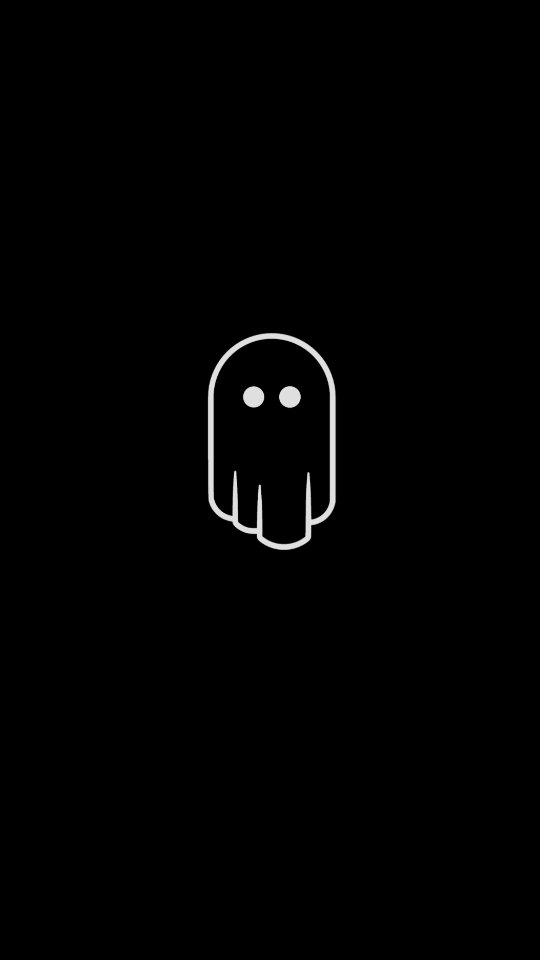
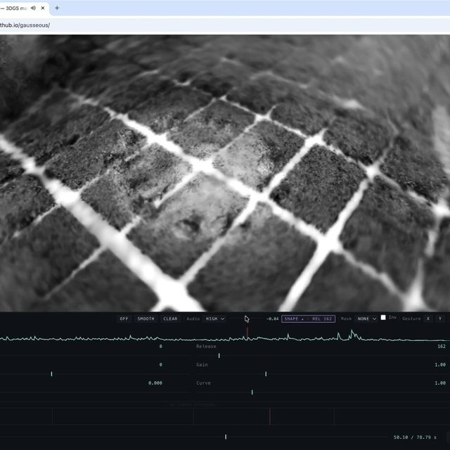
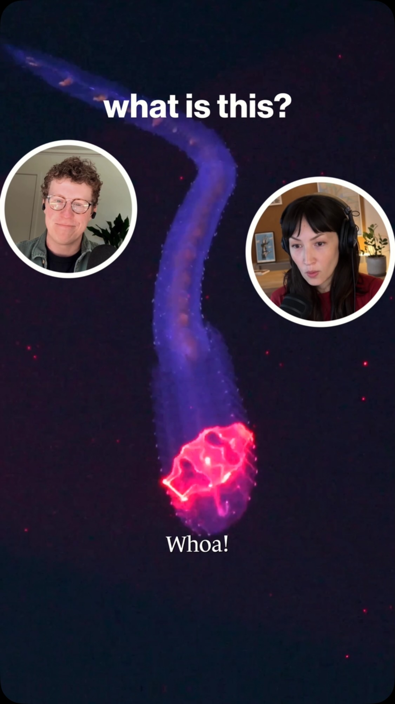
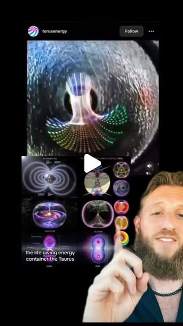
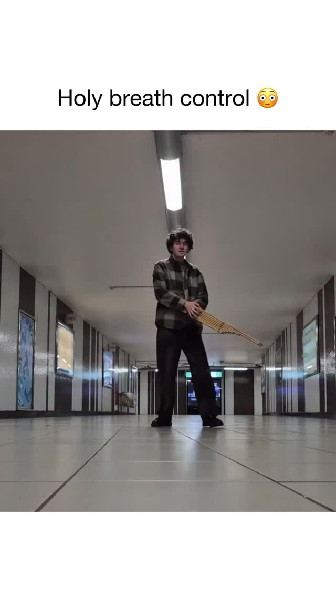
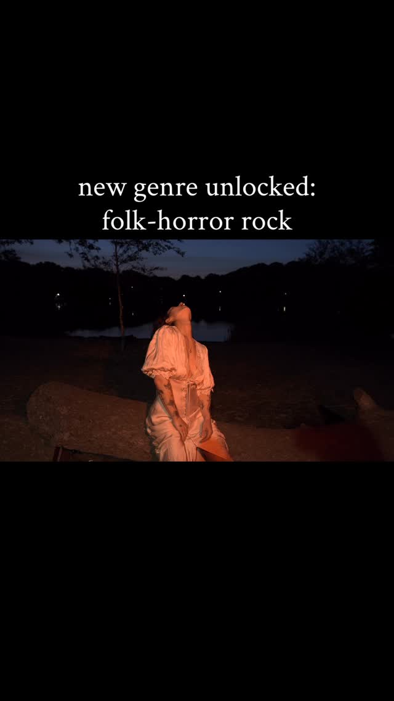

Capture the Room Twice — Splat Scans and Song for Roots Music
Try It — Action Sketch
Scan one meaningful room (a porch, a church, a barn) with a phone splat app (Polycam or Luma), then load the .ply into Gausseous and drive it with a rough recording of one tune In the same session, record a clap or sine-sweep impulse response of the room and convolve your dry instrument recording with it, so the audio carries that room's acoustics Cut a 60-second vertical piece — real performance footage intercut with the reacting splat — and A/B it against a plain performance video on the same account Falsifier: if low-light interior scans come out too noisy to read, or the splat cut loses watch-through to the plain performance video, the format is a gimmick
Connected Posts (10)










Prompt system — run this yourself
Pasteable into Claude Code, Claude, or any agent. One-shot for the whole result, step prompts when you want to steer. Every step carries its own audit; the gap audit makes the agent find and fill what it missed.
Mission. Produce one 60-second vertical music video for a roots or folk act where a single real place is captured twice in one session: as a 3D Gaussian splat that reacts to the music in the browser, and as the room's own acoustics convolved into the recording. The pieces are a phone splat scan, a measured impulse response, a dry performance take, a Gausseous-driven reactive render, and an edit. Done means the splat loads and reacts in the browser, the audio carries that room's reverb by a measurable match, and the splat cut has been A/B watch-tested against a plain performance video on the same account.
1 · Deeper, not bigger
- What a top professional would do (that you didn't ask for): A location-recording engineer and a volumetric-capture artist would treat the room as data captured once, correctly. They would shoot the splat with enough overlapping coverage and even exposure to reconstruct cleanly, knowing low light is the enemy. They would measure the room's impulse response properly, with a sine sweep and the deconvolution method (Farina's exponential sine sweep), not just a clap, and they would capture a dry DI or close-mic take so the room can be added deliberately rather than baked in badly. They would treat the audio-reactive mapping as a mix decision: which band drives which splat parameter, gated and smoothed so it reads as musical, not twitchy. And they would test watch-through, because a format that loses the viewer is a failed format.
- Rawest material to start from: The actual room: a porch, a church, a barn, the 200-year-old Girardeau House that @chancemccoymusic plays for its resonance. A phone with a splat app (Polycam or Luma) producing a .ply or .splat. A sine-sweep file and a recording of the swept response, for a measured impulse response. A dry, close-miked or DI performance take, uncolored by the room. The Lomax field-recording tradition (@dimestoreradio, Nimrod Workman filmed at home) as the model: place and song captured together. Gausseous (github.com/quixbrics/gausseous) and its SparkJS renderer. The khaen or another drone instrument for sustained tones that make the reactivity readable.
- Methods and tools: Phone Gaussian-splat capture (Polycam or Luma), exported as .ply or .splat. Impulse-response measurement by exponential sine sweep and deconvolution (Python with numpy and scipy, or Room EQ Wizard), producing a convolution reverb IR. A DAW with a convolution reverb (such as a free IR loader) to apply that IR to the dry take. Gausseous in the browser for audio-reactive rendering, depth of field, lens curvature and film emulation, with the reactivity mapped per frequency band using the Web Audio AnalyserNode. A 2-hour-safe render-export path. A/B testing on one platform with matched posting times.
- What proves it right: The .splat opens and reacts in Gausseous in a desktop browser at an acceptable frame rate, with no missing-geometry holes in the performance area. The convolution match: the reverb decay time (RT60) of the processed dry take within about 10% of the RT60 measured from the room's impulse response. A blind listening test where people match the processed audio to the room better than chance. The A/B watch-through and completion rate of the splat cut versus a plain performance video, over matched posts. The falsifier: if interior scans are too noisy to read, or the splat cut loses watch-through, the format is a gimmick.
Rewritten prompt — ask for exactly that:
You are a location-recording engineer and a volumetric-capture artist making one roots-music video. Capture one real room twice in a single session. 1. Scan the room as a Gaussian splat with a phone (Polycam or Luma). Shoot for even, overlapping coverage so the performance area has no holes. 2. In the same session, measure the room's impulse response with an exponential sine sweep and deconvolution, and record a dry, close-miked performance take. 3. Convolve the dry take with the measured IR so the recording carries that room's acoustics. Check that the processed RT60 is within 10% of the measured RT60. 4. Load the .splat into Gausseous and map audio-reactivity per frequency band (bass drives scale, highs drive shimmer), gated and smoothed so it reads musically. Use a drone instrument for sustained, readable tones. 5. Cut a 60-second vertical piece intercutting real performance footage with the reacting splat. 6. A/B it against a plain performance video on the same account, matched for posting time, and report watch-through and completion. Return the splat, the IR, the processed audio, the Gausseous project, the edit, and the A/B result with the falsifier verdict.
2 · One-shot prompt
ROLE You are a location-recording engineer and a volumetric-capture artist. You capture a place correctly once, then build both the sound and the image from that one capture. CONTEXT - @chancemccoymusic tests the resonance of the 200-year-old Girardeau House, treating the walls as part of the instrument. - @dimestoreradio: Alan Lomax filmed Nimrod and Molly Workman singing at home in 1983. Place and song, recorded together. - @murphydoesnotmatter: a tune filmed at The Palace in Yancey County, the kind of specific room worth scanning. - @6ab3 and @gerrylistudio: TouchDesigner, MediaPipe and Gaussian splats, including Polycam scanning. - @peppes_ghost: a DIY Raspberry Pi LiDAR scanner for rooms and caves where phone photogrammetry struggles. - @dave_bewick: Gausseous, a free browser tool that makes splats audio-reactive with depth of field, lens curvature, film emulation and render export, built on World Labs' SparkJS. - @howtown_videos: DeepPIV sweeps a laser sheet through a transparent creature to reconstruct it in 3D, a reference for volumetric glowing forms. - @pop.music.culture: the khaen, a free-reed instrument that sustains drones on both inhale and exhale. - @honeycrush.online: a folk-horror video shot DIY by two people with one camera, proof the audience accepts small-crew music videos. HARD CONSTRAINTS - One place, one session. The splat scan, the impulse response and the dry performance take all come from the same room on the same day. - The audio must carry the room's measured acoustics, not a generic reverb preset. - Get permission to scan the room, and name the place and musicians honestly. This is documentary, not synthetic: no generated faces. - The reactivity must read as musical. Gate and smooth it. DELIVERABLES 1. capture/: the phone splat as .ply or .splat, a coverage note, the sine-sweep recording, the deconvolved impulse response (IR), and the dry performance take. 2. audio/: the dry take convolved with the IR, plus a measurement showing the processed RT60 against the room's measured RT60. 3. render/: a Gausseous project loading the splat, with a per-band reactivity map (which band drives scale, position, shimmer), gated and smoothed, and an exported clip. 4. edit/: a 60-second vertical cut intercutting real performance footage with the reacting splat. 5. ab_test/: the plain-performance control video, the posting plan matched for time of day, and a metrics sheet for watch-through and completion. 6. report.md. BUILT-IN GAP ANALYSIS List the parts of the scan with holes or noise (low light is the usual cause), whether the IR was a proper sweep or only a clap, whether a dry take exists or the room was baked in, and whether the A/B has enough views to read. Fill what you can: rescan in better light, redo the sweep. Mark the rest UNFILLED. SELF-QUESTIONS Does the splat have holes where the performer stands? Is the reverb the real room, measured, or a preset? Does the reactivity read as musical or twitchy? Does the splat cut hold the viewer as long as the plain video? STOP Stop when the splat reacts in-browser, the audio carries the measured room, and the A/B has run on matched posts. Stop and ask before posting publicly on the act's account. RETURN Return capture/, audio/, render/, edit/, ab_test/ and report.md with the sections Capture, Acoustics, Render, Edit, A/B Result and Gaps.
3 · Step-by-step prompts
Step 1 — Scan the room and measure its sound
Goal: Capture one place as both a clean splat and a measured impulse response, in one session.
At the chosen room (a porch, church, barn or resonant old house like the Girardeau House), do three captures in one session. (1) Splat scan with Polycam or Luma on a phone. Move slowly in overlapping passes, keep exposure even, and over-cover the area where the performer will stand. Export .ply or .splat. Where phone photogrammetry struggles in low light or large caves, note the @peppes_ghost DIY LiDAR option as a fallback. (2) Impulse response: play an exponential sine sweep through a speaker and record it with a flat mic at the performer's position. You will deconvolve this into an IR. (3) Dry performance take: record the instrument and voice close-miked or DI, so the room is not already baked into the sound. Log the room name, permission, lighting and mic positions.
Expect: capture/ with the .splat, the sweep recording, the dry take, and capture_notes.md covering coverage, lighting and positions.
Audit before moving on: Open the .splat in a viewer. If the performance area has holes or heavy noise, rescan in better light before continuing. Confirm the dry take has minimal room sound. Fail if the IR is only a clap when a sweep was possible, or if no dry take exists.
Step 2 — Deconvolve the impulse response
Goal: Turn the sweep into a usable convolution reverb IR with a measured RT60.
Deconvolve the recorded sweep against the reference sweep to recover the room's impulse response, using Farina's exponential-sine-sweep method. Do it in Python with numpy and scipy, or in Room EQ Wizard. From the IR, compute the room's RT60 (the time for the energy to decay 60 dB, usually via the T30 or T20 extrapolation from the Schroeder integral). Save the IR as a WAV ready for a convolution reverb. Inspect the IR for artifacts: a clean exponential decay, no pre-ringing, no clipping in the sweep recording. Record the RT60 and the IR length. This measured RT60 is the target the processed audio must match later. Keep the reference sweep file and the recorded sweep together, labeled, so the deconvolution is reproducible. Note the speaker and mic used, since the IR carries their coloration and you may want to compensate.
Expect: capture/room_ir.wav, a plot of the IR and its decay curve, and the measured RT60 value.
Audit before moving on: Check the sweep recording for clipping before trusting the IR. If the decay curve is not roughly linear in dB, the measurement is contaminated, so remeasure. Fail if RT60 cannot be computed or the IR shows pre-ringing from a bad deconvolution.
Step 3 — Convolve the room into the recording
Goal: Make the dry take carry the real room's acoustics and verify the match.
Load the dry performance take into a DAW with a convolution reverb, or convolve in Python (scipy.signal.fftconvolve), using capture/room_ir.wav. Balance the dry and wet signal so the result sounds like the performance happened in that room, not drowned in reverb. Then verify: measure the RT60 of the processed take (from a decaying note or by analysis) and compare it with the room's measured RT60 from step 2. They should agree within about 10%. If you have a wet reference recording of the same performance in the room, compare the convolved version to it as a second check. Export the processed audio. Keep both the dry and the processed takes, so the edit can choose. Note the wet/dry ratio you settled on, because it is the single biggest taste decision here and you will want to recall it for the next room.
Expect: audio/performance_room.wav and a short match report: processed RT60 versus measured RT60, with the percentage difference.
Audit before moving on: If the processed RT60 differs from the measured room by more than 10%, re-check the wet/dry balance and the IR normalization. Fail if a generic reverb preset was used instead of the measured IR, or if the match report is missing.
Step 4 — Make the splat react to the music
Goal: Load the splat into Gausseous and drive it musically from the audio.
Load the .splat into Gausseous (quixbrics.github.io/gausseous). Confirm it renders without holes in the performance area. Use the Web Audio AnalyserNode to split the processed audio into bands. Map them deliberately: bass drives overall scale or a slow pulse, mids drive position drift, highs drive shimmer or point size. Gate each mapping with a threshold and smooth it with an attack/release envelope so the motion reads as musical rather than twitchy. Use a sustained, droning passage, like the khaen or a bowed note, to tune the response, because long tones make reactivity legible. Add Gausseous's depth of field, a little lens curvature and film emulation for the volumetric glow in the DeepPIV reference, without burying the room. Export a reactive clip at least as long as the final edit.
Expect: render/ with the Gausseous project or settings, a per-band reactivity map, and an exported reactive clip.
Audit before moving on: Watch the clip against the audio. If the motion looks random or disconnected from the beat, raise the gates and lengthen the smoothing. Confirm no missing-geometry holes show in frame. Fail if the reactivity is unsmoothed strobing or if the splat reveals holes where the performer is.
Step 5 — Cut the 60-second piece
Goal: Edit a vertical cut intercutting real performance and the reacting splat.
Assemble a 60-second vertical (9:16) edit. Intercut real performance footage, honest and documentary in the Lomax spirit, with the reacting splat. The place itself should move with the tune. Sync the cut to the processed room audio. Open on something that establishes the real place, so the splat reads as that same room transformed, not a generic effect. Follow the @honeycrush.online proof that a two-person, one-camera shoot can carry a strong mood. Keep the musicians and the place named in the caption. No generated faces, no synthetic performance. Export at the platform's preferred vertical resolution and frame rate. Keep the project file and a frame-accurate marker list so re-exports match. Export a square or landscape version too if the act wants it for other platforms, from the same timeline.
Expect: edit/final_60s.mp4, a vertical cut synced to the room audio, with an honest caption naming the place and players.
Audit before moving on: Confirm the edit opens on the real place and that the viewer can tell the splat is that room. Confirm the audio is the convolved room take, not the dry take. Fail if the piece hides the real performance behind effects, or runs long enough to lose a short-form viewer.
Step 6 — A/B against a plain performance video
Goal: Test whether the splat format earns its complexity with the audience.
Make a control: a plain performance video of the same tune in the same room, same length, no splat. Post the splat cut and the control on the same account, matched for day and time of day, far enough apart not to cannibalize each other, and ideally counterbalanced across two tunes. Pre-register the metric: average watch-through (percent of the video watched) and completion rate. Collect the platform analytics for both after a set window (for example 7 days). State the pass rule in advance: the splat cut holds watch-through at least as well as the plain video. If it loses watch-through, the format is decoration, per the dive's falsifier. Record the view count, likes and shares alongside retention, but judge on retention, since reach depends on the algorithm. Keep the raw analytics screenshots in ab_test/ as evidence for the audit.
Expect: ab_test/ with the control video, the posting log, and a metrics sheet of watch-through and completion for both.
Audit before moving on: Confirm the two posts are matched for time and length, or the comparison is confounded. If total views are too low to distinguish the two, extend the window rather than calling a result. Fail if the metric was chosen after seeing the numbers.
Step 7 — Validate against oracles and write the gap report
Goal: Judge the piece by capture quality, acoustic match and audience retention.
Run the oracle pass: (a) The .splat opens and reacts in a desktop browser with no holes in the performance area. (b) The processed RT60 is within 10% of the room's measured RT60. (c) A blind listening test: people match the processed audio to the room better than chance. (d) The A/B watch-through and completion of the splat cut versus the control. (e) The falsifier: are interior scans too noisy to read, or does the splat cut lose watch-through? If either, say the format is a gimmick for this room. Write report.md with the sections Capture, Acoustics, Render, Edit, A/B Result, Falsifier and Gaps. State plainly whether the format earned its complexity. Rank the gaps by effect on the result.
Expect: report.md, a five-row oracle table, and a ranked gap list.
Audit before moving on: Any acoustic 'match' without the RT60 numbers is downgraded to unverified. Any A/B 'win' without matched posts is downgraded to inconclusive. Confirm the report names the real place and musicians. Fail if the falsifier section is missing.
4 · Gap analysis and audit
You are an independent reviewer: a recording engineer plus a volumetric artist. Open report.md, capture/, audio/, render/, edit/ and ab_test/. 1. Enumerate every claim: scan quality, the acoustic match, the reactivity, and the A/B result. Mark each verified, unverified or false. 2. Open the .splat yourself and look for holes in the performance area. Load it in Gausseous and confirm it reacts. 3. Recompute the processed take's RT60 and compare it with the measured room RT60. Is it within 10%? 4. Confirm the audio in the final edit is the convolved room take, not the dry take or a preset reverb. 5. Check the A/B: are the posts matched for time and length, and was the metric pre-registered? 6. List what is missing: scan holes, a clap-not-sweep IR, no dry take, an underpowered A/B. 7. Rank the gaps by effect on the result. Fix the top three now where possible (re-balance the wet/dry, raise the reactivity gates). Report what needs a reshoot and why. Return audit.md with the columns claim, status, evidence and fix, plus 'Remaining gaps' and an A-F grade on whether the format earned its complexity.
Questions the agent must ask itself before it says done:
- Does the splat have holes or noise where the performer stands?
- Was the impulse response a proper sine sweep, or just a clap I am overselling?
- Is the dry take actually dry, or is the room already baked into it?
- Is the processed RT60 within 10% of the measured room RT60?
- Does the audio-reactivity read as musical, or is it twitchy strobing?
- Did I use the convolved room audio in the final edit, not the dry take?
- Does the edit establish the real place before showing the splat?
- Are the A/B posts matched for time of day and length?
- Did I pre-register the watch-through metric before seeing the numbers?
- Does the splat cut hold the viewer as long as the plain performance video?
- Did I name the place and musicians honestly, with no synthetic performance?
5 · What proves it right
- The exported .splat opens and reacts in Gausseous in a desktop browser at an acceptable frame rate, with no holes in the performance area.
- Acoustic match: the processed take's RT60 is within about 10% of the room's measured RT60 from the impulse response.
- Blind listening test: people match the processed audio to the correct room better than chance.
- A/B retention: watch-through and completion of the splat cut versus a matched plain-performance control on the same account.
- The pre-registered falsifier: interior scans too noisy to read, or the splat cut losing watch-through, means the format is a gimmick for this room.
6 · Failure modes
- Noisy low-light scan. Tell: holes and floaters where the performer stands. Fix: rescan with even light and overlapping coverage, or fall back to DIY LiDAR for big dark rooms.
- Fake room sound. Tell: a reverb preset instead of the measured IR. Fix: deconvolve a real sweep and match RT60 within 10%.
- Baked-in room on the source. Tell: no dry take, so the IR adds reverb on top of reverb. Fix: always capture a dry close-mic or DI take.
- Twitchy reactivity. Tell: the splat strobes on transients unrelated to the music. Fix: gate and smooth each band, and tune on sustained drones.
- Effect over substance. Tell: the real place and performance vanish behind filters. Fix: open on the room and keep the documentary core.
- Confounded A/B. Tell: the two posts went out at different times or lengths. Fix: match posting time and length and pre-register the metric.
7 · Agent direction (unattended runs)
Capture is the bottleneck, so get the room right in one session: a clean splat, a proper sine-sweep IR, and a dry take. A bad scan cannot be fixed later. Cache the .splat, the IR and the dry take under capture/ and never overwrite the originals. Do the deconvolution and convolution in the main thread, since the RT60 match gates everything downstream. Spawn a sub-agent for the Gausseous reactivity tuning, giving it the processed audio and the per-band mapping goals. Do not post to the act's public account, and do not publish anyone's likeness, without explicit permission. Ask the human for the room, the permission to scan it, and the performance footage at the start. Return capture/, audio/, render/, edit/, ab_test/, report.md and audit.md. The final message states the RT60 match, whether the splat reacts cleanly, and the A/B watch-through verdict.
Prompt system updated 2026-10-22 · all prompt systems · JSON